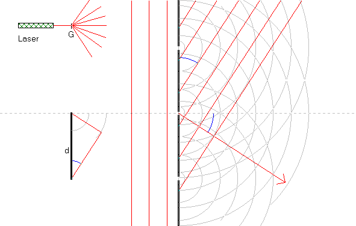

Se også dobbeltspalte.

Interferens i optisk gitter vha. en laser med bølgelængden 632.8 nm.
Udskriv et skærmbillede og skriv betegnelser på figurerne. I udskriftsmenuen skal du afkrydse: »Udskriv tabel«, så får du også udskrevet bølgelængde, gitterafstand, osv.
Når du har prøvet at variere gitterafstanden, og betragtet de forskellige ordens afbøjninger i simulationen, skal du opskrive gitterligningen og gøre rede for denne.